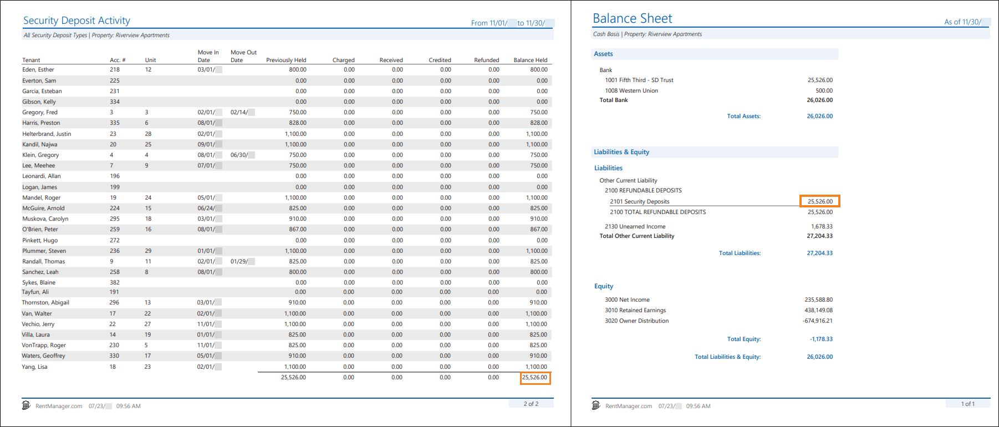

Source: https://rmxhelp.rentmanager.com/Topics/Express/KB/Report-Security-Deposit-Activity-Balance-Sheet.htm
Security Deposit Activity and Balance Sheet
The Security Deposit Activity and Balance Sheet reports both provide the balance of security deposits held. However, each includes transactions from different sources and limits transactions based on their dates.
Warning
The information contained here does not replace the advice of an accountant. If you are unclear about how to interpret the data presented in the related reports, please consult your accountant.
The Security Deposit Activity report displays security deposits that were charged, received, and refunded at the selected properties during a date range, as well as tenant move-in activity. It also includes the total dollar amount of held security deposits for each tenant and prospect, as well as the total dollar amount of deposits charged, paid, and refunded to tenants during the date range.
The Balance Sheet report displays the financial position of a property or business as of a specified date. This allows you to view the assets of one or more properties and the claims (liabilities and equities) against those assets using the following rule: Assets = Liabilities + Equities.
Related Privileges
| Group | Privilege | Column |
|---|---|---|
| Letter/Email Templates/Reports/Packets | Run reports | Enabled |
| Run accounting reports | Enabled |
Additionally, on the Reports tab, you must have access to Security Deposit Activity and Balance Sheet.
For more information, refer to Control User Access.
When run with comparable report options, the Security Deposit Activity report's Balance Held column for a property matches the Balance Sheet report's Security Deposits general ledger (GL) account for that same property.

Report Options
To populate comparable reports, use the report option combinations listed in the table below. Follow these guidelines to generate a Security Deposit Activity and Balance Sheet that complement each other. Report options not mentioned do not affect comparability.
| Security Deposit Activity | Balance Sheet | Description |
|---|---|---|
|
Date Range |
As of Date |
The As of Date for the Balance Sheet report must be the same as the To date selected in the Security Deposit Activity report's date range. For example, if the Date Range is from 01/01/2026 to 04/30/2026, select 04/30/2026 for the As of Date option. |
|
Properties/Owners to Include |
Properties/Owners to Include |
The same properties or owners must be selected for both reports. |
|
Security Deposit Types to Include |
n/a |
Select each security deposit type to examine in the report. Generally you will select all, as the Balance Sheet report includes all security deposit types. Related Preferences This option does not display if there is only one security deposit charge type established in your system preferences. For more information, refer to Security Deposit General Options (System Preferences). |
|
Show Prospects |
n/a |
This option must be checked because the Balance Sheet report automatically includes prospects. |
|
Tenants to Include |
n/a |
The All option must be selected because the Balance Sheet report automatically includes all tenants. |
|
n/a |
Cash or Accrual |
The Cash option must be selected because the Security Deposit Activity report automatically generates on an cash basis. |
|
n/a |
Show whole dollar only |
This option must be unchecked because the Security Deposit Activity report does not populate with whole dollars. |
Transaction Activity That Can Cause Incomparable Reports
While running the reports with the suggested report options above allows the reports to examine the same data, there are other factors that can cause discrepancies between these value totals.
GL Accounts Linked to Security Deposit Charges
If any of your security deposit GL accounts are linked to charge types that are not used for security deposits, this can cause discrepancies in the report. Security deposit charge types should be linked only to the associated security deposit GL account. You can confirm the security deposit charge types as set in system preferences. For more information, refer to Security Deposit General Options (System Preferences).
To verify that there are no incorrect charge types attached to a GL account, you can view the details of the GL account in the chart of accounts to see which charge types are associated with each GL account.For more information, refer to Chart of Account Details (Page).
Security Deposits Dated Prior to GL Start Date versus Beginning Balances
Security deposits that are dated prior to your established GL start date or that have the option Deposit Prior to GL Start Date selected must be consistent with the beginning balances set for those security deposit GL accounts. A charge and credit must be created for a date prior to the GL start date. If these are not consistent with each other, this can cause discrepancies in the report values.
Related Preferences
Your database's GL start date is located in system preferences in the G/L Start Date field. For more information, refer to General Ledger Settings (System Preferences).
To locate discrepancies between the prior dated security deposits and associated beginning balances, do the following:
-
Run or refresh the Security Deposit Activity report with both the From and To fields of the date range set to one day prior to the GL start date. For example, if your GL start date is 6/10/2026, both date fields in the date range should be set to 6/9/2026.
-
On the Balance Sheet report's output, click on the dollar value of the Security Deposits field to drill down to the General Ledger for that GL account.
-
In the Type column, locate the transactions with a type named BEGBAL.
More Information
If you used the beginning balance tool to enter your balances, transactions are labeled with the BEGBAL type. However, if you entered your beginning balances with a journal entry, those beginning balance transactions are labeled as JOURNL and need to be located amongst any other journal entries in the report.
-
Add together all beginning balance transactions. The sum of these transactions should match the Security Deposit Activity report's total balance in the Previously Held column when run for the day prior to the GL start date.
Non-Tenant and Non-Prospect Transactions
The Security Deposit Activity report includes only transactions entered on tenant and prospect accounts, not transactions from elsewhere in Rent Manager. The Balance Sheet report includes transactions from any source (such as journal entries) where an asset, liability, or equity account was selected. To locate any other instances where the security deposit GL account was used in a transaction, on the Balance Sheet report, click on the dollar value of the Security Deposits field to drill down to the General Ledger for that GL account. Then search for transactions marked as: BNKDEP, CC CHG, CC CRDT, CHECK, and JOURNL. The sum of those transactions should cover the difference between the two report totals.
Preallocated Prepayments for Security Deposit Charge Types
If a tenant or prospect prepayment was received and it was preallocated to a security deposit charge type, the Balance Sheet report includes this payment at the same time the payment was received. The Security Deposit Activity report only includes the payment once the charge is posted to the account and it is dated on or during the report's date range.
To locate these prepayments, generate the Tenant Prepays report with the report options below. The report output populates with all tenants and prospects that have a prepaid security deposit with a charge that has not yet been posted/dated as of the report date. For more information, refer to Tenant Prepays (Report).
| Option | Description |
|---|---|
|
As of Date |
This date must be the same as the To date selected in the Security Deposit Activity report's Date Range option. |
|
Charges to Include |
The same security deposit charge types must be selected as those selected in the Security Deposit Activity report. |
|
Properties to Include |
Select the same property or property group as the Security Deposit Activity report. If the Owners tab is selected for the Security Deposit Activity report, then on the Tenant Prepays report, select the properties of those selected owners. |
|
Tenants to Include |
The All option must be selected to match the Security Deposit Activity report. |